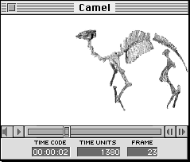

You can also change the duration of any number of frames (from one to all) in a movie. To do this, choose Change duration from the Editt menu and in the dialog that appears, enter a new duration in QuickTime time units.
Note: Increasing a movie's time duration causes the movie play bar slider to extend beyond the boundary of the play bar by the amount of increased duration. When this occurs the movie does not play to the last frame, but begins to loop from the part that extends past the play bar boundary to the second to last frame of the entire clip.
Figure 1 shows an example of a MovieEdit window. Note the time code, QuickTime time units, and frame number information displayed in Figure 1.

Figure 1: MovieEdit window.
Table 1: MovieEdit functionality.
--------------------------------------------------------
Command |Keyboard Sequence
--------------------------------------------------------
Start playing a |Double-click inside a movie window,
movie |or press Space bar or Return key.
--------------------------------------------------------
Stop playing a |Click inside the movie window, or
movie |press Space bar, Return key, or
|Command-period.
--------------------------------------------------------
Step frame forward|Right Arrow key.
--------------------------------------------------------
Step frame reverse|Left Arrow key.
--------------------------------------------------------
Increase/decrease |Click on speaker icon and an
volume |adjustable bar appears.
--------------------------------------------------------
Turn sound on or |Hold down Option key and click on
off |speaker icon.
--------------------------------------------------------
Jump to end |Option-Step frame forward.
--------------------------------------------------------
Jump to beginning |Option-Step frame backward.
--------------------------------------------------------
Play forward |Command-Step frame forward (Right
|Arrow key).
--------------------------------------------------------
Play in reverse |Command-Step frame backward (Left
|Arrow key).
--------------------------------------------------------
Change the movie's|Hold down the Control key and click
forward or reverse|either step button to reveal the
speed |speed slider. Drag from its center
|toward the right/left to control
|forward/reverse speed.
--------------------------------------------------------
Loop |Hold down the Option key when you
|start playing.
--------------------------------------------------------